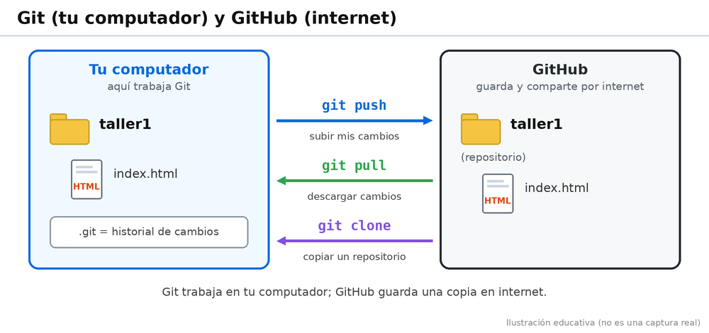
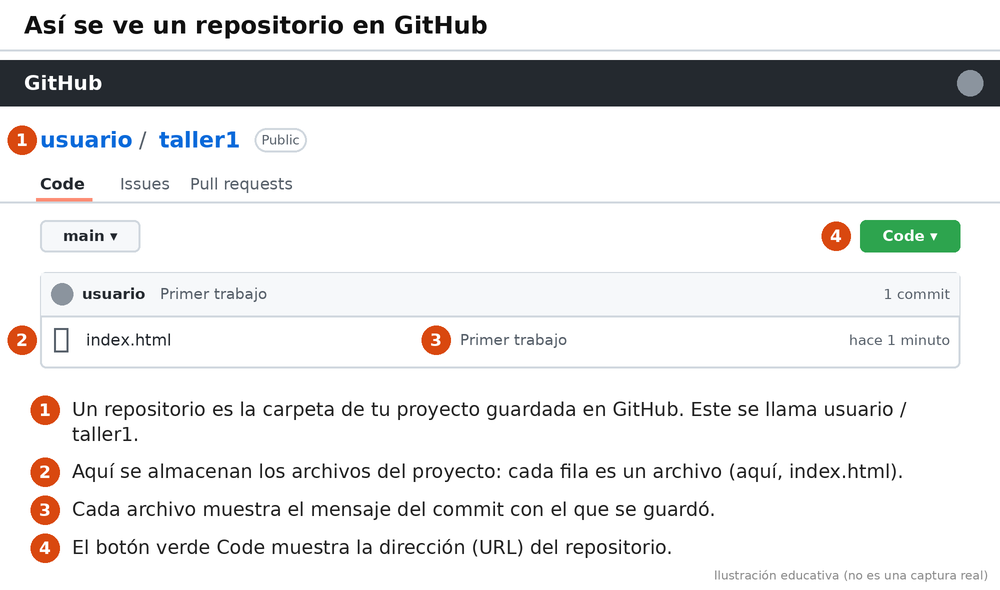

GitHub es una plataforma de internet que nos permite guardar nuestros proyectos y compartirlos con otras personas. Es muy utilizada por los programadores para organizar sus trabajos y colaborar en equipo.
Git es la herramienta que utilizamos en nuestro computador para registrar los cambios de los archivos. GitHub es la plataforma donde podemos guardar y compartir nuestros repositorios por internet.

Imagina que creas una página web llamada index.html. Puedes utilizar Git para registrar los cambios y después subir el proyecto a GitHub para tenerlo guardado en internet.

Para guardar nuestros proyectos en internet necesitamos una cuenta en GitHub. Es gratis. Este es el paso 5 de la guía de inicio; los pasos 1 a 4 (instalar y configurar Git) están en la página ¿Qué es Git?.
Abrimos el navegador y entramos a https://github.com/. Hacemos clic en el botón Sign up (Registrarse). Hay uno arriba a la derecha y otro botón verde en el centro de la página; cualquiera de los dos sirve.
GitHub nos pide un correo electrónico, una contraseña y un nombre de usuario. El nombre de usuario es público y será parte de la dirección de nuestros repositorios, así que conviene elegir uno sencillo y anotarlo. Después GitHub puede pedirnos resolver una pequeña verificación y escribir un código que llega a nuestro correo. Cuando terminamos, ya tenemos nuestra cuenta lista.